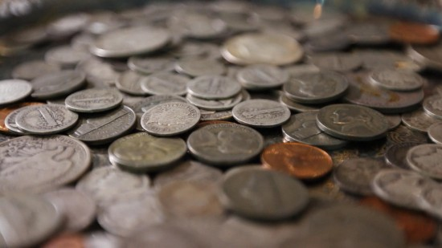

10 интересных фактов о деньгах

1) Миллион американских долларов банкнотами по 100$ будет весить порядка 10 килограммов.
2) В стране Палау в 2008 году была выпущена ограниченная серия коллекционных монет. Они содержат в себе каплю воды из одного французского источника, который на Палау считается священным.
3) В первой четверти прошлого века, в годы после Первой Мировой войны, Германия находилась в экономическом коллапсе. Валютная система была разрушена, экономика пришла в упадок, так что в разных городах жители, пытаясь сохранить подобие порядка, печатали свои собственные деньги.
4) В Кот-д’Ивуаре однажды были отчеканены уникальные монеты, инкрустированные кусочками костей ископаемых мамонтов.
5 )В мире существуют частные деньги, эмитированные не странами, а различными компаниями. В большинстве стран частные деньги либо запрещены, либо серьёзно ограничены.
6) Банкнота с самым крупным в истории номиналом была выпущена в Зимбабве в период гиперинфляции. Одна купюра имела номинал в 100 триллионов зимбабвийских долларов.
7) Первый в мире денежный перевод был осуществлён в США в 1918 году с помощью телеграфа.
8) Неподалёку от Нью-Йорка есть город Итака, в котором местные итакские деньги имеют хождение наравне с американским долларом.
9) В СССР большая часть денег не была «твёрдой валютой». К таковой относились только советские золотые червонцы.
10) После Первой Мировой войны в Германии деньги обесценились до такой степени, что жители оклеивали ими стены вместо обоев — это было попросту дешевле.